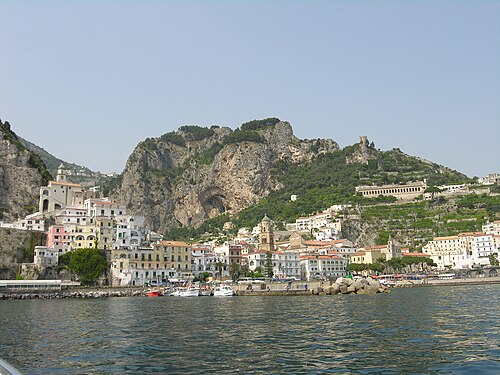
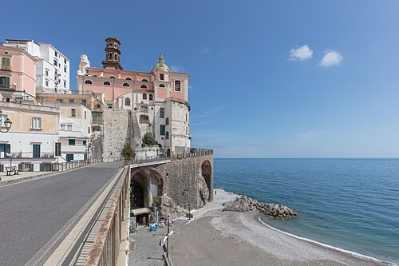

This map shows 8 of the most-searched sights in Amalfi as photo spots, ranked by how often people search for them: Atrani, Marina Grande, Amalfi Cathedral, Paper Museum and Torre dello Ziro lead the list. Every spot has a pin on the subject and a phone icon showing where to stand, with tips for shooting it on your phone: which lens to use, how to frame it, a settings tip and the best time of day. Directions and Navigate buttons take you to the standing point on foot or by public transport. 3 spots are free to view; the full map is for members.
The 3 free photo spots
1Atrani

Atrani is a tiny seaside village tucked between two hills, and it photographs well because everything is packed into one frame: a small beach, an arcade, pastel houses stacked up the slope and a church dome rising above them. It is officially the smallest municipality in Italy, covering just 12 hectares, and about 832 people lived here in 2020. Long ago it was the twin of Amalfi and home to its leading families. The dukes of Amalfi were crowned here in the chapel of San Salvatore, and the cap used in the ceremony was called the "birecto". The village's old central square still opens onto the beach through an old passageway that was built to save boats from sea storms. For the best phone picture, don't shoot from the sand. Stand on Via Gabriele di Benedetto, the stretch beside the Amalfi Drive road, one flight of steps up from the beach. From there you look down over the beach, the arcade and the rooftops, with the church dome in view. It is a better angle than the beach itself. If you also want a close-up of the dome and bell tower above the pastel houses, you can take one from the beach, Spiaggia di Atrani. Take care when you stop beside the road, because the Amalfi Drive has narrow stretches without pavements.
Where it is: Atrani is a separate village just east of Amalfi, in the valley between Civita Hill and Aureo Hill, with its houses running right down to the beach. The viewpoint is on the street beside the coastal road, just above the beach.
Shooting it on your phone
Lens: Start with the default lens (1x) for the whole scene of beach, arcade and village. Then try telephoto (2x or more, depending on your phone) to pick out the church dome and the colours of the houses.
Where to stand: Stand on Via Gabriele di Benedetto (stretch next to the Amalfi Drive road, one flight of steps up from the beach). An elevated overview of the beach, the arcade and the village, with the church dome visible. On the stretch next to the Amalfi Drive road, one flight of steps up from the beach. From here the village lies to the north-west, and you look over the beach and arcade with the church dome showing above the houses.
Framing: Turn on gridlines and put the beach along the lower third, with the dome near one of the upper crossing points. Keep the phone level so the buildings don't lean. If you want a different angle, the beach itself shows the arcade and the dome with the bell tower above the pastel houses.
Settings tip: Tap on the church or the front of the houses to set focus, then drag the exposure slider down a little so the sky doesn't wash out. At dusk, switch on night mode and hold the phone as still as you can.
Best time: Blue hour, when the village lights come on, is the time a guide recommends for the best light.
4Museo della Carta

The Museo della Carta is Amalfi's paper museum (the name means exactly that), and it is rank 4 on this map. It is a spot for a quick, calm photo stop rather than a big panorama. The appeal is the building itself, its entrance and any signs or details that tell a passer-by what it is. A photo here works well as a travel-diary picture that says where you have been, and it pairs nicely with wider shots of Amalfi taken elsewhere on your walk.
The phone icon on the map sits right at the museum, so you do not need to hunt for a viewpoint. Stand close, look for the cleanest view of the front, and take a step back if other visitors are in the way. Keep your phone upright for a doorway or façade, and turn it sideways if you want to include the street or surroundings.
If you would like a shot of an interior, exhibit or demonstration, rules on photography inside can differ from place to place, so ask the staff or check the official site before you go. Outside, take your time, tidy up the edges of the frame, and take a few versions so you can choose later.
Where it is: In Amalfi, at the Museo della Carta (see the map for the exact location).
Shooting it on your phone
Lens: Start with the default lens (1x) for a natural view of the entrance. If the street is narrow and you cannot fit the building in, switch to ultra-wide (0.5x), and keep the phone level so the walls do not lean. Use telephoto (2x-5x, depending on your phone) for signs, plaques or details.
Where to stand: Stand right at the subject: the phone icon on the map marks the spot. Step back along the street if you need more of the façade in the frame.
Framing: Switch on the gridlines and line the doorway or front wall up with the vertical lines so the building looks straight. Leave a little space around the edges, and shoot a wide version and a close detail of the entrance or sign.
Settings tip: Tap the entrance on your screen to focus, then drag the exposure slider down slightly if the sky is bright and the walls look dark or washed out. Wipe the lens first.
Best time: Go when the street is quiet so there are fewer people in the frame. Soft daylight usually flatters a building front better than harsh midday sun.
5Torre dello Ziro

Torre dello Ziro is a cylindrical ruined tower on a hilltop above Amalfi and Atrani. It is reached by a long trail with plenty of steps, and most walkers set out from Pontone, in Scala. The effort pays off for photographs. The tower is a strong shape on its own, and from near it you can see Amalfi, Atrani and the sea spread out below.
The best-known photo stop is a terrace called Veliero del Belvedere, on the trail branch just before the tower, on the uphill side. Guides recommend it as a stop for the best photos on this trail. From there you get a wide view over the coast and the towns, with the tower in the background. A higher belvedere above the tower may give a wider view including the tower itself. Ask locally to find the exact terrace.
For a second picture, walk the short way to the tower. With the tower in the foreground, Amalfi and Atrani sit behind it with the sea beyond. That gives you a layered shot with a clear foreground, middle and background.
Allow roughly 1.5 to 2.5 hours for the round trip from Pontone. Going inside the tower may not be safe, so check on the day. Treat it as a ruin, look from outside unless you are sure, and take care near edges.
Where it is: On a hilltop above Amalfi and Atrani, on the walking trail that links the two towns, well uphill from the waterfront. Most walkers approach from Pontone, in Scala.
Shooting it on your phone
Lens: Start with the default lens (1x) on the terrace for the coast-and-towns view. Switch to ultra-wide (0.5x) if you want to fit in more of the slope and the sea. Use the telephoto (2x-5x, depending on your phone) to pull the tower closer from a distance.
Where to stand: Stand on Veliero del Belvedere (on the trail branch just before the tower, uphill side). A panoramic view over the coast and towns, with the Torre dello Ziro visible in the background. The Veliero del Belvedere terrace is on the trail branch just before the tower, on the uphill side. From the terrace the photo shows a panoramic view over the coast and towns, with Torre dello Ziro visible in the background.
Framing: Turn on gridlines and put the horizon on the upper or lower line, so the coast does not look tilted. Place the tower on a third so it stays visible without dominating the frame. For the alternative, walk to the tower and shoot with it in the foreground and Amalfi, Atrani and the sea behind. A higher belvedere above the tower may give a wider view, so ask locally.
Settings tip: Tap the sky or the sea to set focus, then slide the exposure down slightly so the sky keeps its colour. If the view is wide, try panorama mode and move slowly and steadily.
Best time: Soft morning or late-afternoon light usually suits the coast best. Leave enough daylight to walk back down the steps.
5 more spots for members
These spots are on the map as grey numbered pins. Where to stand, the phone tips, photos and directions for them come with Explorer membership.
- 2Marina Grande · members
- 3Amalfi Cathedral · members
- 6Piazza Duomo · members
- 7Fontana di Sant'Andrea · members
- 8Chiostro del Paradiso · members
Get every spot with Explorer membership
Explorer opens every spot on every map in the library: where to stand, how to frame it on your phone and how to get there, plus the Xdatrys Maps app with maps saved on your phone for use without signal. $9.99 a month or $59.99 a year; cancel any time.
Join Explorer Compare free and Explorer
Not ready to join?
Get Pocket Lens, our free daily smartphone travel photography newsletter.
Free, and you can unsubscribe at any time. If the form does not show, sign up on our newsletter page.
Questions
What are the top photo spots in Amalfi?
The first three on this map are Atrani, Marina Grande and Amalfi Cathedral. They are ranked by how often people search for them. The full map has 8.
Where should I stand to photograph Atrani?
Stand on Via Gabriele di Benedetto (stretch next to the Amalfi Drive road, one flight of steps up from the beach). Start with the default lens (1x) for the whole scene of beach, arcade and village.
When is the best time to photograph Paper Museum?
Go when the street is quiet so there are fewer people in the frame. Soft daylight usually flatters a building front better than harsh midday sun.
How do I get to Torre dello Ziro?
No station or tram stop is listed for this spot.
Credits
Map data © OpenStreetMap contributors (ODbL); base map built with Protomaps from OpenStreetMap data. Photos from Wikimedia Commons, credited under each photo with their licence. Background reading for the free spots: Atrani (Wikipedia, CC BY-SA). Access rules and opening times change: check before you go.